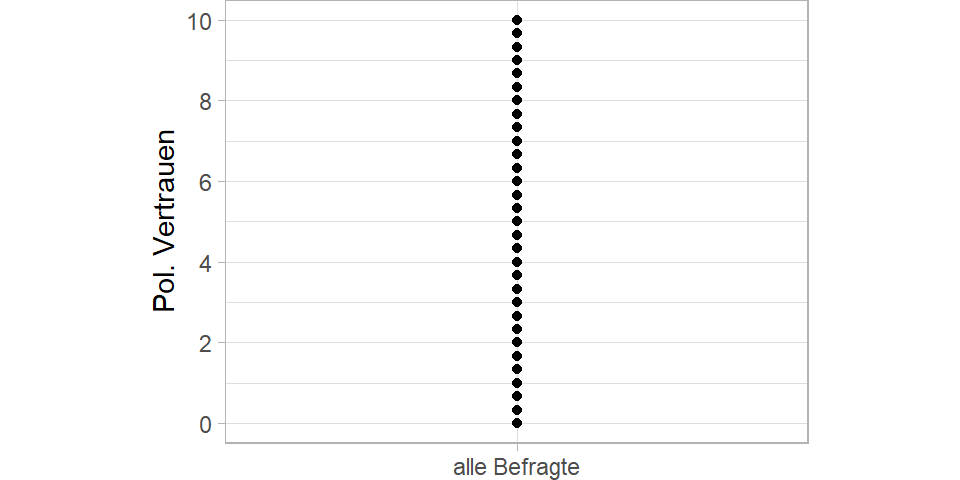
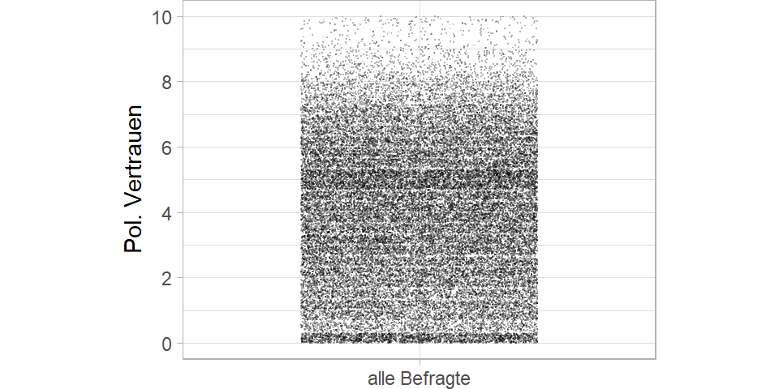
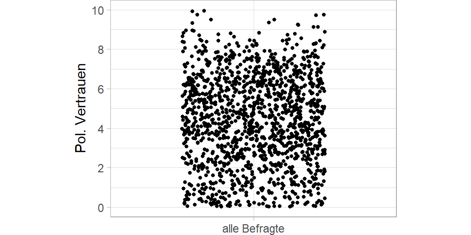
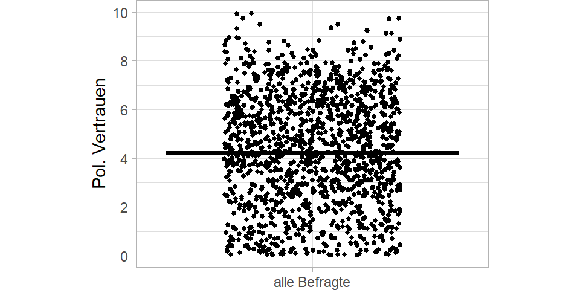
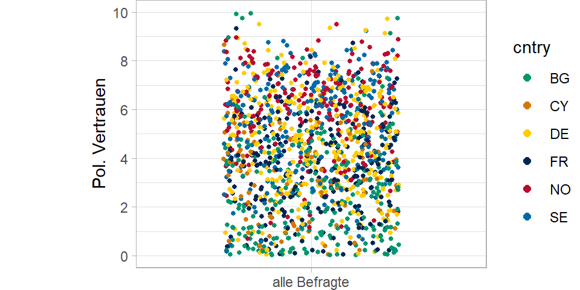
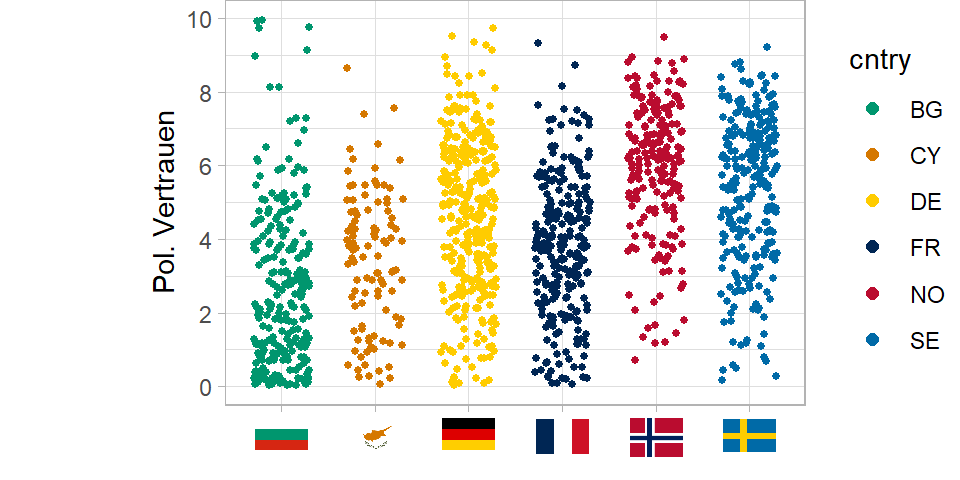
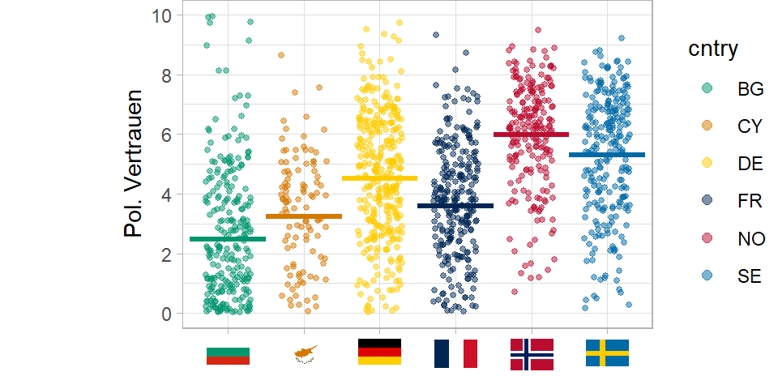
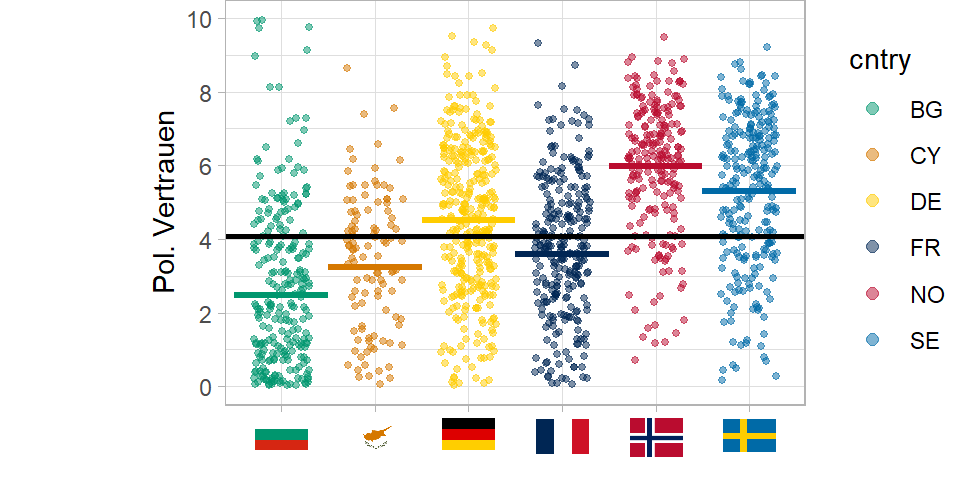
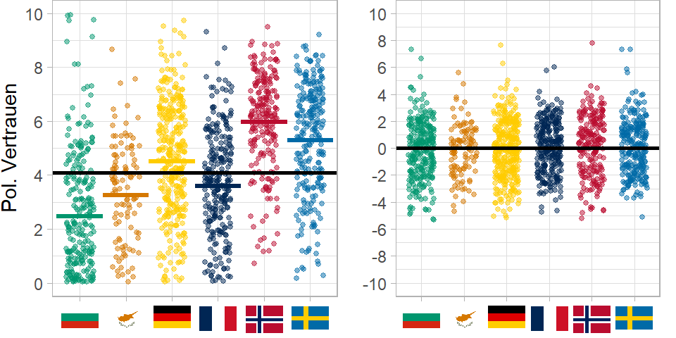

2. Wann ist eine Mehrebenenregression angebracht?
Themenüberblick
In Teil 1 haben Sie das Grundprinzip der Mehrebenenregression kennengelernt. Wir hatten gesagt, dass eine Mehrebenenregression das geeignete statistische Verfahren ist, wenn Ihre Daten eine hiererchische Struktur aufweisen.
In diesem zweiten Video vertiefen wir diesen Aspekt. Das Video zu diesem zweiten Teil finden Sie hier.
In der ersten Hälfte möchte ich an einem Beispiel verdeutlichen, was es eigentlich heißt, dass Daten eine Mehrebenenstruktur aufweisen und wie sich das in der Gleichung des Mehrebenenmodells wiederspiegelt.
In der zweiten Hälfte schauen wir dann, wie mit Hilfe des Nullmodell und dem Intraklassenkorrelationskoeffizienten \(ICC\) bestimmt werden kann, ob eine Mehrebenenregression angemessen ist.
Dann heißt auch Hands-on und wir rechnen mit R.
Die konkreten Lernziele sind, dass Sie…
- theoretisch begründen können wie und warum der Kontext einen Einfluss auf Ihre Datenstruktur hat.
- erläutern können, was ein Nullmodell und es als Regressionsgleichung formulieren können.
- wissen welche Varianzkomponenten das Nullmodell beinhaltet und wo sie in der Regrgressionsgleichung zu finden sind.
- wissen was die Intraklassenkorrelation ist und wie man sie mit R berechnet und interpretiert.
Context Matters
Viele Phänomene, die wir erklären wollen, oder über die wir eine Prognose treffen wollen lassen sich nicht alleine auf der Individualebene, bzw. der Mikroebene modellieren.
Also nicht nur persönliche Eigenschaften, Merkmale und Einstellungen haben einen Einfluss darauf, was Menschen tun, was sie denken, wen Sie wählen oder wie sie konsumieren.
Der soziale Kontext und die institutionellen Strukturen auf Meso- und Makroebene haben einen nicht zu unterschätzenden Einfluss auf die Menschen und ihr handeln.
Menschen teilen einen gemeinsamen sozialen Kontext innerhalb von Gruppen. Gleichzeitig unterscheiden diese Kontexte sich aber zwischen den Gruppen. Menschen unterliegen also unterschiedlichen sozialen Kontexten. Mit den Konzepten des methodologischen Individualismus und dem Makro-Mikro-Makro-Schema, das besser bekannt ist als die Coleman’sche Badewanne, wird analytisch klar, dass die Erklärung sozialer Phänomene immer alle Ebenen berücksichtigen muss.
Dieses Argument möchte ich Ihnen anhand der Daten des ESS verdeutlichen.
Unser durchgängiges Beispiel in der Videoserie ist das Thema Politikverdrossenheit. Was in den Medien oder Alltagssprachlich als Politikverdrossenheit bezeichnet wird, wird in der Forschung mit dem Konzept „Political Support“ untersucht. Eine Komponente davon ist das politische Vertrauen der Bürger. Das ist unsere abhängige Variable.
Wer mehr inhaltlich darüber wissen möchte, für den gibt es am Ende des Videos noch Literaturhinweise. Also: Schauen wir uns das politische Vertrauen in Europa an:
Es handelt sich um einen Mittelwert-Index aus drei Items.
„Bitte […] sagen Sie mir zu jeder öffentlichen Einrichtung oder Personengruppe, die ich Ihnen nenne, wie sehr Sie persönlich jeder einzelnen davon vertrauen. […] 0 bedeutet, dass Sie dieser Einrichtung oder Personengruppe überhaupt nicht vertrauen, und 10 bedeutet, dass Sie ihr voll und ganz vertrauen.“ - den Parteien - dem Bundestag (bzw. dem jeweiligen Parlament im Land) - den Politikern

Aber hier sehen wir relativ wenig, weil hinter jedem Punkt eine Vielzahl von Befragten steckt. Um einen besseren Eindruck bekommen, ziehe ich die Punkte auf der vertikalen und horizontalen Achse etwas auseinander und mache die Punkte kleiner. So erkennen wir alle der knapp 50.000 Punkte.

Ganz schön viele Punkte. Damit das Beispiel übersichtlich bleibt, mache ich mit nur sechs der 27 Länder weiter und nutze von diesen auch nur 15 Prozent der Datenpunkte.

Immer noch viel, aber etwas übersichtlicher. Lassen Sie uns noch den Mean einzeichnen.

Das Durchschnittliche politische Vertrauen in den sechs Länder liegt bei 4. Es ist also einen Skalenpunkt unterhalb der theoretischen Skalenmitte und somit leicht negativ. Aber was sagt dieser Mittelwert aus? Wir wissen ja, dass hier Befragte aus sechs unterschiedlichen Ländern zusammengefasst werden.
Und wir sehen ja auch, dass die Streuung recht groß ist - um genau zu sein liegt die Standardabweichung bei 2.4.
Man muss kein Politikwissenschaftler sein, um zu ahnen, dass ein Teil der Unterschiede - oder genauer ein Teil der Streuung im politischen Vertrauen - darauf zurückzuführen ist, dass zwischen den Ländern große Unterschiede im politischen Vertrauen bestehen.
Also färben wir die Befrgaten mal nach Länderzugehörigkeit ein.

Ja… man ahnt schon etwas… unten mehr grün… oben mehr rot und hellblau. Aber machen wir es doch ganz eindeutig und gruppieren die Befragten nach ihren Ländern…

Was wir nun sehen ist, dass ein Teil der Streuung in der Punktewolke auf Varianz zwischen den Ländern zurückzuführen ist.

Jedes Land hat ein anderes durchschnittliches Niveau von politischem Vertrauen. Wir können für jedes Land den Mittelwert einzeichnen. Und diese Mittelwerte streuen um den Mittelwert der Ländern, den sogenannten Grand Mean.

Was wir jetzt sehen: Es gibt also Varianz innerhalb der Länder: Befragte streuen um den ihren jeweiligen Landesmittelwert. Und es gibt Varianz zwischen den Ländern. Die Länder streuen um den Gesamtmittelwert, den Grand Mean.
Die Varianz innerhalb der Länder, also Varianz auf Individualebene kann nur durch Prädiktoren auf Individualebene erklärt werden. Und Varianz zwischen den Ländern kann nur durch Merkmale auf Ebene der Länder erklärt werden.
Also: Menschen haben hohes oder niedriges politisches Vertrauen (Mikroebene). Aber der soziale Kontext - hier das politische System und gesellschaftliche Faktoren auf Ebene der Länder - beeinflussen als Makroebene das politische Vertrauen. Ein Teil der Unterschiede im politischen Vertrauen, geht also alleine auf diese Kontextfaktoren zurück. Und kann also nur durch Variation auf der Kontextebene erklärt werden.
Wie wir bereits gesehen haben ist die Mehrebenenregression das geeignete Verfahren zur Analyse sozialer Phänomene, bei denen Kontextfaktoren und deren Wechselwirkungen mit der Individualebene explizit modelliert werden sollen.
Eine Bedingung ist aber, dass die Daten auch empirisch eine hierarchische Struktur aufweisen.
Also dass die Ebenen nicht nur strukturell vorhanden sind, sondern darüber hinaus, dass auch tatsächlich eine empirische Variation zwischen den Ländern vorhanden ist.
Und zwar für die jeweilige Y-Variable, die für Sie in Ihrer Forschungsfrage relevant ist!
Das heißt ob und wie stark die Mehrebenenstruktur ausgeprägt ist, ist kein Merkmal des gesamten Datensatzes, sondern ein Merkmal einer spezifischen Variable in Abhängigkeit einer spezifischen Gruppierungsvariable. Und das kann bei einer anderen Variable, die einem anderen datengenerierenden Prozess unterliegt, ganz anders aussehen.
Der erste Schritt einer Mehrebeneanalyse ist also zu prüfen, ob ausreichend Variation auf der oberen Ebene vorhanden. Dafür schätzen wir ein sogenannten Nullmodell oder leeres Modell (manchmal auch Baseline Modell).
Das Nullmodell
Das Nullmodell ist ein Mehrebenenmodell, bei dem noch keine unabhängigen Variablen mit ins Modell aufgenommen werden. Es ist ein Random Intercept Modell ohne Prädiktoren.
Das hier erkennen Sie bestimmt:
\(\hat{y}=a+bx\)
Es ist die klassische Regressiongleichung.
Der Vorhersagewert \(\hat{y}\) ergibt sich aus einer Regressionsgeraden, welche die Y-Achse an einem bestimmten Punkt schneidet. Das ist der Intercept \(a\). Und der Regressionskoeffizient \(b\) sagt uns, um welchen Wert die Regressionsgerade steigt, wenn die unabhänige Variable \(x\) um einen bestimmten Wert zunimmt. Dieser Steigungsparameter \(b\) wird im englischen Slope genannt.
Auch dier Mehrebenenregression basiert auf dieser klassischen Gleichung. Allerdings werden alle Regressionsparamter, also der Intercept und die Slopes einfach mit \(\beta\) bezeichnet und durchgezählt. \(\beta_0\) ist der Intercept, \(\beta_1\) die erste unabhänige Variable, \(\beta_2\) die zweite, usw..
\(\hat{y}=\beta_0+\beta_1x_1\)
Weil das einfache OLS Modell nur eine Ebene hat, verzichtet man häufig auf einen Index. Vollständig würde die Gleichung aber lauten:
\(\hat{y}_i=\beta_0+\beta_1x_{1i}\)
Der Vorhersagewert und der Wert der x-Variable sind Befragtenspezifisch, daher Index \(i\).
Auch im klassischen OLS Modell könnten wir ein Nullmodel, also ein Modell ohne unabhängige Variablen schätzen.
\(\hat{y}_i=\beta_0\)
Der Vorhersagewert wäre für alle Befragten einfach der Intercept, also eine Gerade, die parallel zur x-Achse verläuft und dem Mittelwert der abhängigen Variable entspricht.
Das Nullmodell einer Mehrebenenregression wird Formel folgendermaßen ausgedrückt:
\(\hat{y}_{ij} = \beta_{0j}\)
Neu ist, dass der Vorhersagewert und der Intercept zusätzlich den Index \(j\) haben. Für den Vorhersagewert \(\hat{y}\) heißt das, nur das es sich um den Wert des Befrgaten \(i\) in Land \(j\) handelt. Für den Intercept \(\beta_{0}\) heißt es, dass es sich um einen länderspezifischen Mittelwert handelt.
Im Nullmodell ergibt sich also der Vorhersagewert \(\hat{y}_{ij}\) einzig aus einem länderspezifischen Intercept \(\beta_{0j}\).
Wir könnten die Formel auch etwas ausführlicher schreiben:
\(y_{ij} = \beta_{0j} + r_{ij}\)
Statt dem Vorhersagewert \(\hat{y}\) haben wir nun den beobachteten Wert \(y\) auf der linken Seite. Damit die Gleichung trotzdem aufgeht, ergänzen wir rechts noch die Fehlerterm, bzw. die Residuen \(r_{ij}\).
Der beobachtete Wert \(y_{ij}\) für Befragten \(i\) in Land \(j\) ergibt sich demnach aus dem Intercept \(\beta_{0j}\) für Land \(j\) und einem Fehlerterm oder Residuum \(r_{ij}\) für den jeweiligen Befragten \(i\) in Land \(j\).
Der länderspezifische Intercept \(\beta_{0j}\) macht nichts anderes, als dass er die Varianz zwischen den Ländern aus den Daten heraus rechnet.
Was bleibt, ist die Varianz auf Individualebene. Und da wir keine weiteren Prädiktoren im Modell haben, ist steckt alle Varianz zwischen den Befragten also im Residuum \(r_{ij}\).
Da der Intercept \(\beta_{0j}\) aber länderspezifisch ist (das sehen wir im Index \(j\)), müssen wir auch das im Modell berücksichtigen. Das heißt das Nullmodell ergänzen wir noch um eine zweite Zeile, die angibt, wie sich der variierende Intercept zusammensetzt. Oder anders ausgedrückt: Wir müssen noch ein Modell für die Ebene 2 formulieren:
\(y_{ij} = \beta_{0j} + r_{ij}\)
mit\(\beta_{0j} = \gamma_{00} + u_{0j}\)
Die zweite Zeile sagt nun: Der Ebene 1 Intercept \(\beta_{0j}\) für Land \(j\) ergibt sich aus einem Ebene 2 Intercept \(\gamma_{00}\) (Gamma Null Null) und einem Ebene 2 Residuum \(u_{0j}\).
\(\gamma_{00}\) ist dabei der Grand Mean, also der Mittelwert der Ländermittelwerte. Wie jeder Intercept ist das eine Konstante. Da \(\gamma_{00}\) nicht variiert, hat es keinen Index \(j\).
Das Ebene 2 Residuum \(u_{0j}\) beschtreibt dann für jedes Land \(j\) die Abweichung vom Grand Mean, also vom Ebene 2 Intercept \(\gamma_{00}\). Alle Varianz zwischen den Ländern steckt also im Ebene 2 Residuum \(u_{0j}\)
Mit Hilfe des Nullmodells können wir also berechnen, wie viel Varianz jeweils auf Individualebene und auf Kontextebene zu finden ist.
Damit können wir den sogenannten \(ICC\) berechnen, der uns Hilft zu entscheiden, ob eine Mehrebenenregression notwendig ist.
Die Intraklassenkorrelation ICC
Wie wir gerade gesehen haben, können die Gesamtvarianz in einer abhängigen Variable mit Hilfe des Nullmodels in Varianzkomponenten zerlegt werden.
Wir können bestimmen, wie viel der Variation in der Abweichung der Individuen vom jeweiligen Gruppenmittelwert - also dem länderspezifischen Intercept \(\beta_{0j}\) steck. Und wie viel der Variation in der Abweichung der Gruppen bzw. Länder vom Gesamtmittelwert, bzw. Grand Mean \(\gamma_{00}\) steckt.
Kurz nochmal als Auffrischung: Die Varianz ist die Summe der quadrierten Abweichungen vom Mittelwert, die um die Stichprobengröße bereinigt ist. Das Ganze sieht dann so aus:
\[s^2=\frac{\sum\nolimits _{i=1}^{n}{(x_i-\bar{x})^2}}{n-1}\]
Also der Abstand von Beobachtungswert zum Mittelwert wird quadriert und über alle Befragten aufsummiert. Dann durch die Fallzahl minus 1 geteilt.
Die Gesamtvarianz hier im Bild in der Variable politisches Vertrauen ist 5.67.
Wenn wir für jedes Land den Ländermittelwert, also den länderpsezifischen Intercept \(beta_{0j}\) abziehen, man könnte auch sagen, um den Gruppenmittelwert zentrieren, dann rechnen wir die Varianz auf Ebene 2 aus der Gesamtvarianz heraus. Es bleibt nur noch die Varianz auf Individualebene, unabhängig von der Länderzugehörigkeit.
Das sehen Sie nun rechts im Bild.

Hier ist die Varianz nur noch bei 4.28, weil die Varianz zwischen den Ländern fehlt. 4.28 ist die Varianz auf Individualebene.
Jetzt können wir auch ausrechnen, wie große der Anteil der Varianz zwischen den Ländern an der Gesamtvarianz ist:
\[\frac{Varianz~auf~L2}{Gesamtvarianz} = \frac{Gesamtvarianz ~ - ~ Varianz~auf~L1}{Gesamtvarianz} = \frac{5.67 - 4.28}{5.67} = 0.24\]
Wenn wir diesen Wert mit 100 multiplizieren, können wir den Wert als Prozentwert interpretieren: Wir sehen also, dass 24 Prozent der Varianz in den Daten (hier für diese 6 Länder) auf Kontexteffekte zurückgehen.
Was wir hier berechnet haben ist der sogenannte Intraklassenkorrelationkoeffizient kurz \(ICC\). In Lehrbüchern finden Sie auch manchmal die Notation mit griechischem \(\rho\) (rho) für den ICC und \(\sigma^2\) (sigma) für die Varianz:
\(ICC = \rho=\frac{\sigma^2_{L2}}{\sigma^2_{L1}+\sigma^2_{L2}}\)
Der \(ICC\) gibt an, wie viel Varianz in den einer Variable durch die Gruppierungsvariable aufgeklärt werden kann (in Prozent).
Als Daumenregel wird häufig genannt, dass der \(ICC \ge 0.05\) sein sollte. Wenn also mindestens 5 Prozent der Varianz auf der Kontextebene zu finden sind, ist ein Mehrebenenmodell sinnvoll.
Allerdings ist das kein hartes Kriterium. Denn: Sobald der \(ICC\) positive Werte annimmt werden die Standardfehler bei nicht Berücksichtigung der Mehrebenenstruktur bereits unterschätzt (Muthen/Satorra 1995: 289)! Im schlechtesten Fall geht man von signifikanten Effekten aus, wo gar keine sind. Dazu aber auch noch mehr im dritten Video.
Schauen wir uns nun in R an, wie wir das Nullmodell schätzen und damit den \(ICC\) berechnen.
Umsetzung in R
Um den ICC berechnen zu können, schätzen wir ein sogenannten Nullmodell oder leeres Modell (manchmal auch Baseline Modell).
Dabei handelt es sich um ein Mehrebenenmodell, bei dem noch keine unabhängigen Variablen mit ins Modell aufgenommen werden. Es ist ein Random Intercept Modell ohne Prädiktoren.
Das Nullmodell ist immer der erste Schritt bei einer Mehrebenenanalyse. Es liefert uns die Informationen, wie viel Varianz auf welcher Ebene zu finden ist - und damit, ob es sich überhaupt lohnt, weitere komplexere Mehrebenenmodelle zu schätzen.
Bevor wir dieses Nullmodell berechnen können, müssen wir aber zunächst die Daten einlesen und vorbereiten. Ich nutze das foreign-Paket mit der Funktion read.spss() um den ESS Datensatz den ich heruntergeladen habe einzulesen. Information und Link zum Datensatz finden Sie im ersten Video.
# Einlesen des Datensatzes
library(foreign)
ess <- read.spss("./Daten/ESS9e02.sav",
use.value.labels = FALSE,
to.data.frame = TRUE,
reencode = TRUE)Als nächstes erstelle ich einen Mittelwertindex mit der Funktion rowMeans() aus den drei Vertrauens-Items trstpr, trstpl und trstprt. Der Mittelwertindex hat den Vorteil, dass wir nicht so viele Missing Values erhalten wie bei einem additiven Index. Beim additiven Index genügt schon ein NA auf einem der drei Items um zu einem listenweisen Fallausschluss zu führen.
# Operationalisierung der abh. Variable
# "Politisches Vertrauen"
# Mittelwertindex aus drei Items:
idx_vars <- c("trstprl","trstplt","trstprt")
ess$pol_vertrauen <- rowMeans(ess[,idx_vars],
na.rm = F)
#table(ess$pol_vertrauen, useNA = "always")
#DescTools::Desc(ess$pol_vertrauen)
#table(ess$cntry)Wir haben nun also die Variable pol_vertrauen als abhängige Variable und die Variable cntry als L2 Gruppierungsvariable. Da wir für das Nullmodell noch keine weiteren Prädiktoren benötigen, können wir direkt im nächsten Schritt das Nullmodell schätzen.
Für die Mehrebenenregression nutzen wir das Paket lme4 von Bates et al. (2015). Darauf aufbauend gibt es noch das Paket lmerTest, welches zusätzlich Signifikanztests mit ausgibt.
library(lme4)
library(lmerTest) #Eigentlich genügt lmerTest, da das automatisch auch lme4 lädtBeide Pakete enthalten die Funktion lmer(). lmer steht für linear mixed effects regression.
Die lmer()-Funktion erwartet im einfachsten Fall nur eine Formel, die das Modell spezifiziert und den Dataframe den wir nutzen.
Was neu ist, ist dass wir nun explizit angeben müssen, dass ein Intercept geschätzt werden soll.
Die Formel für den R-Code lautet pol_vertrauen ~ 1 + (1 | cntry).
mreg.0 <- lmer(pol_vertrauen ~ 1 + (1 | cntry),
data = ess)Allgemeiner heißt das:
- Die abhängige Variable
pol_vertrauen - wird regrediert
~ - auf einen Ebene 1 Intercept
1 - dabei darf der Intercept
1variieren|nach der Gruppierungsvariablecntry: also:(1 | cntry)
Dass der Intercept mit einer 1 angegeben wird, kommt daher, dass die Regressionsgleichung eigentlich so aussieht:
\(\hat{y}_{ij}=\beta_0j\) \(1\) \(+\beta_1x_{ij}\)
Der Intercept wird nämlich für jeden Befragten mal 1 genommen, was man aber in der Formle nicht ausschreiben muss.
Das Regressionsobjekt haben wir unter dem Namen mreg.0 gespeichert.
Das können wir nun aufrufen oder direkt mit der Funktion summary() anzeigen lassen:
summary(mreg.0)Linear mixed model fit by REML. t-tests use Satterthwaite's method [
lmerModLmerTest]
Formula: pol_vertrauen ~ 1 + (1 | cntry)
Data: ess
REML criterion at convergence: 196954.6
Scaled residuals:
Min 1Q Median 3Q Max
-2.7457 -0.7566 0.0255 0.7034 3.8140
Random effects:
Groups Name Variance Std.Dev.
cntry (Intercept) 1.053 1.026
Residual 4.471 2.115
Number of obs: 45391, groups: cntry, 27
Fixed effects:
Estimate Std. Error df t value Pr(>|t|)
(Intercept) 3.8413 0.1978 25.9987 19.42 <2e-16 ***
---
Signif. codes: 0 '***' 0.001 '**' 0.01 '*' 0.05 '.' 0.1 ' ' 1Viele Informationen in diesem Output sind an dieser Stelle nicht wichtig. Für uns sind folgende Quanitites of Interest relevant:
Unten bei den Fixed Effects in blau hervorgehoben, sehen wir den durchschnittlichen Wert der variienden Intercepts, also den Grand Mean \(\gamma_{00}\). Dieser liegt bei \(3.8\).
Aber: der Intercept darf ja variierenden! Und wie groß diese Varianz ist, sehen wir oben bei den Random Effects, hier in rot hervorgehoben. Hier finden wir die Varianzkomponenten des Modells. Also: das was variieren darf, und was noch nicht systematisch im Modell erklärt wird. Daher auch die Bezeichnung Random Effects.
Auf der Ebene der Gruppierungsvariable cntry haben wir einen variierenden Intercept, das ist das \(\beta_{0j}\), mit einer Varianz von \(1.05.\)
Übrig bleibt eine Resiudalvarianz auf Ebene 1, also das was nicht durch den variierenden Intercept erklärt wird. Das sind hier \(4.47.\)
Mit diesen beiden Zahlen lässt sich nun der \(ICC\) berechnen.
\(\frac{1.05}{1.05 + 4.47}= 0.19\)
Um das nicht von Hand erledigen zu müssen, gibt es im Paket performance die Funktion icc(), die man auf das Nullmodell anwendet:
library(performance)
icc(mreg.0)# Intraclass Correlation Coefficient
Adjusted ICC: 0.191
Unadjusted ICC: 0.191Wir sehen also der\(ICC\) beträgt 0.19065 - 19.1 Prozent der Varianz liegen auf Ebene 2.
Das ist ziemlich guter Wert für eine abhängige Variable aus dem Bereich der politikwissenschaftlichen Einstellungs- und Verhaltensforschung. Der datengenerierende Prozess resultiert also tatsächlich in einer geclusterten bzw. hierarchischen Datenstruktur. Die obere Ebene ist für fast ein Fünftel der Varianz in den Daten verantwortlich.
Somit wissen wir: Eine Mehrebenenregression ist unbedingt einer einfachen OLS Regression vorzuziehen, wenn wir korrekte Ergebnisse erhalten wollen, denen wir auch trauen können.
Tun wir das nicht, korrelieren die Fehler der Individualebene mit einem Kontextmerkmal, nämlich der Länderzugehörigkeit der Befragten. Wir nehmen an, die Befragten wären unabhängig voneinander, was sie in Wahrheit nicht sind.
Unter anderem werden die Standardfehler der Regressionskoeffizienten im einfachen OLS Modell auf Basis der gesamten Stichprobe berechnet. Es wird nicht berücksichtigt, dass die Varianzen und Fallzahlen in den Gruppen unterschiedlich sind. Als Folge werden die Standardfehler unterschätzt.
Wenn die Standardfehler aber kleiner sind, als sie sein müssten, wird auch die Irrtumswahrscheinlichkeit beim Signifikanztest unterschätzt.
Im schlechtesten Fall gehen Sie also von signifikanten Effekten aus, wo in Wahrheit kein Zusammenhang zu finden ist.
Sie sehen, wenn die Daten eine Mehrebenenstruktur aufweisen, sollten Sie auch unbedingt ein Mehrebenenmodell schätzen!
Im nächsten Teil 3 werden wir uns aber zunächst mit der Operationalisierung, also der Vorbereitung der Daten für die Mehrebenenregression beschäftigen.
Aufgabe
Für diese Aufgaben ist es sinnvoll, das Codebuch des ESS Datensatzes zur Hand zu nehmen, um nach geegineten Variablen zu suchen. Das Codebuch ist auf der Webseite des ESS verfügbar.
- Überlegen Sie sich, welche anderen Variablen Sie als abhängige Variable nutzen könnten und prüfen Sie anhand des ICC, wie stark diese von der oberen Ebene der Länder abhängig sind.
- Überlegen Sie sich für eine abhänige Variable ihrer Wahl, ob neben den Ländern auch eine andere Gruppierungsvariable denkbar ist. Berechnen Sie den ICC.
Lernzielabgleich
Haben Sie alles mitgenommen? Fragen Sie sich selbst, ob Sie die folgenden Lernziele erreicht haben:
- Sie können theoretisch begründen wie und warum der Kontext einen Einfluss auf Ihre Datenstruktur hat.
- Sie können erläutern, was ein Nullmodell ist und können es als Regressionsgleichung formulieren.
- Sie wissen welche Varianzkomponenten das Nullmodell beinhaltet und wo sie in der Regrgressionsgleichung zu finden sind.
- Sie wissen was die Intraklassenkorrelation ist und wie man sie mit R berechnet und interpretiert.
Literatur
- Bates, D., Mächler, M., Bolker, B., & Walker, S. (2015). Fitting Linear Mixed-Effects Models Using lme4. Journal of Statistical Software, 67(1), 1–48. DOI: https://doi.org/10.18637/jss.v067.i01
- Elff, Martin; Heisig, Jan Paul; Schaeffer, Merlin; Shikano, Susumu (2021): Multilevel Analysis with Few Clusters: Improving Likelihood-based Methods to Provide Unbiased Estimates and Accurate Inference. British Journal of Political Science 51(1): 412-426. DOI: https://doi.org/10.1017/S0007123419000097
- Gelman, Andrew; Hill, Jennifer (2009): Data-Analysis Using regression and Multilevel/Hierachical Models. Cambridge: Cambridge University Press. Kap. 12 & 13. https://doi.org/10.1017/CBO9780511790942
- Muthen, B. O.; Satorra, A. (1995): Complex sample data in structural equation modeling. Sociological methodology, 267-316. DOI: https://doi.org/10.2307/271070
Literatur zur Beispielfragestellung (nach Aktualität sortiert):
- Dalton, Russell J. (2019): Citizen politics: Public opinion and political parties in advanced industrial democracies. Cq Press.
- van Ham, Caroline; Thomassen, Jaques. J.; Aarts, Kees; Andeweg, Rudy B. (Hrsg.)(2017): Myth and reality of the legitimacy crisis: Explaining trends and cross-national differences in established democracies. Oxford University Press. https://doi.org/10.1093/oso/9780198793717.001.0001
- Arzheimer, Kai (2002): Politikverdrossenheit. Bedeutung, Verwendung und empirische Relevanz eines politikwissenschaftlichen Begriffes. Wiesbaden: Westdeutscher Verlag. Volltext: https://www.kai-arzheimer.com/politikverdrossenheit.pdf